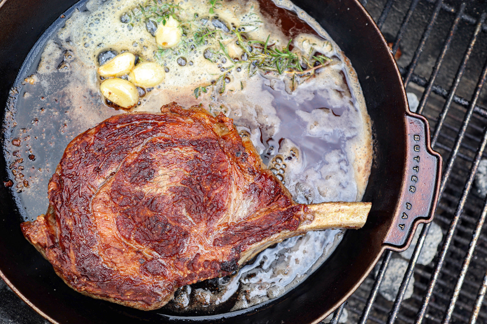

Steak

A butter basted steak is a delicious and flavorful way to cook a steak.
The steak is seared in a hot skillet and then basted with melted butter, garlic, and herbs to create a rich and savory crust.
Ingredients
- 2 steaks, about 1 inch thick (ribeye, NY strip, or your preferred cut)
- Salt and pepper
- 2 tablespoons of vegetable oil
- 4 tablespoons of unsalted butter
- 2 garlic cloves, smashed
- 2 sprigs of fresh thyme
- 1 sprig of fresh rosemary
Steps
- Remove the steaks from the refrigerator and let them come to room temperature for 30 minutes.
- Season the steaks generously with salt and pepper on both sides.
- Heat the vegetable oil in a large skillet over high heat until it begins to smoke.
- Add the steaks to the skillet and sear for 2-3 minutes on each side until browned.
- Reduce the heat to medium and add the butter, garlic, thyme, and rosemary to the skillet.
- Use a spoon to baste the steaks with the melted butter, spooning the butter over the steaks repeatedly for 1-2 minutes.
- Use a meat thermometer to check the internal temperature of the steaks. For medium-rare, the temperature should be 130-135°F.
- Remove the steaks from the skillet and let them rest for 5 minutes.
- Slice the steaks against the grain and serve.